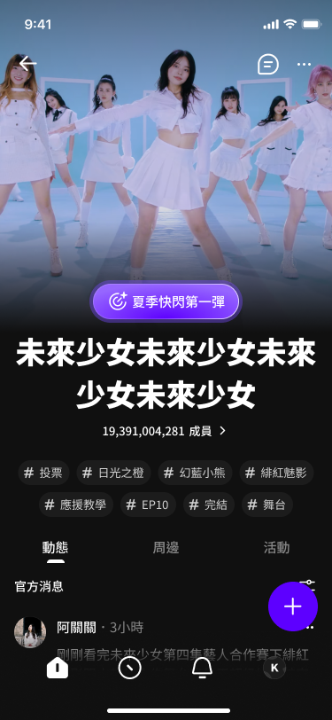
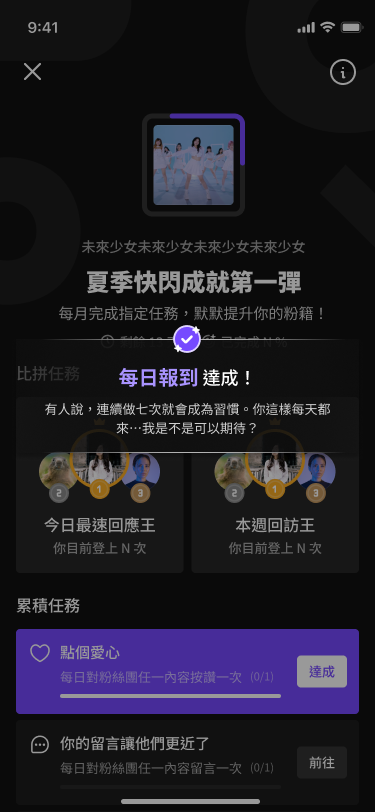
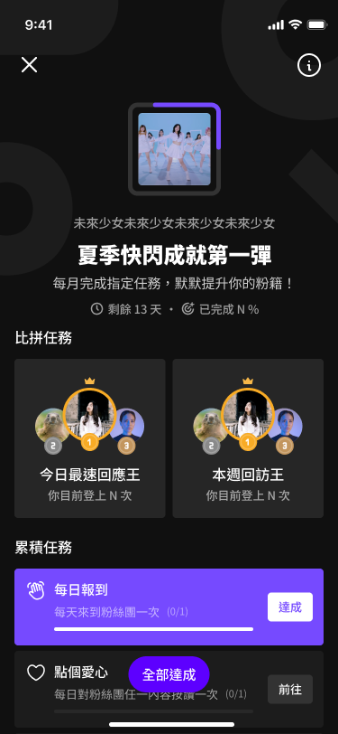
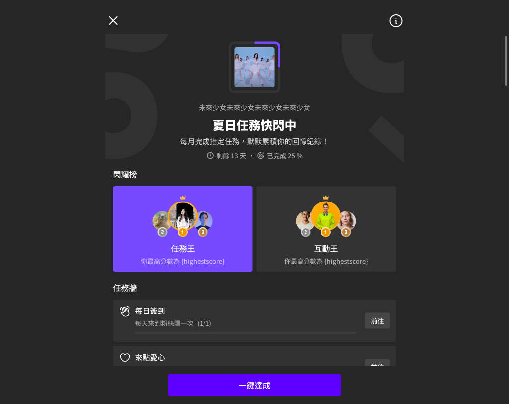

跨職能凝聚產品共識
我不只接收需求，而是主動把問題往前推，整理策略、任務規則與決策依據，讓不同職能對「成就感」有一致理解。
正向反饋循環設計
用即時成就感與長期累積動力設計用戶行為閉環，讓回訪本身有意義，不只是功能的堆疊。
遊戲化思維落地
把遊戲化機制從抽象概念轉化為具體互動設計，讓粉絲在社群行為中感受到進展與被認可。
用戶有互動，但平台沒有讓他感覺到「我正在前進」。
初期討論很容易走向「要不要做任務」、「要不要排行榜」、「要不要發獎勵」這類功能問題。但我覺得真正需要先被防守的是產品判斷：這個功能為什麼值得做？它解的是回訪、互動，還是只是又多一個入口？
這讓我在專案裡跨出去更多，不只是等 PM 定義完需求再設計，而是一起把問題往前釐清。成就機制必須回到粉絲心理：我投入時間，是因為我在意這個偶像、這個社群，也希望這份投入被看見。
先用草稿對齊 flow，再用飛輪對齊策略。
專案啟動時，設計、PM、營運對「任務」各有想像，討論容易在細節裡打轉。我先用平板畫出任務 flow，讓大家可以指著同一張圖討論入口、完成、競爭、結算與回訪。
流程對齊後，再整理成任務旅程飛輪，把任務類型與獎勵節奏拆清楚。這個框架後來也變成說服團隊接受競爭任務的依據。

會議中直接用草稿把三條任務旅程畫清楚，讓討論從「想像」回到「流程」。

整理後的任務飛輪，確立任務類型、獎勵節奏與回訪循環。
低門檻快速滿足
完成單一行為就得到回饋，讓新手知道互動會被平台接住。
看見自己的進步
透過進度條與可完成排序，讓用戶一直知道下一步在哪裡。
把刺激感放在對的位置
排行榜提供短期刺激，但不讓競爭破壞粉絲社群的友善調性。
製造成就峰值
活動結束時用動畫與數字揭曉，把成果轉成可分享的情緒記憶。
競爭任務會不會破壞平台的粉絲友善感？
營運擔心排行榜讓氣氛過度競爭，和 hidol 想營造的支持、陪伴感衝突。
累積是核心，競爭是點綴。
飛輪讓大家看見比例關係：競爭不是主軸，而是短期刺激。核心仍是累積與被看見。

我也用 Player Type 的 TA 分析補強討論：hidol 用戶不是只想贏，他們更在意自己的投入是否被記錄、被展示、被同好看見。競爭設計只要比例正確，就能成為正向動力，而不是壓力來源。
任務列表分成三個區塊，對應三種用戶動機。

進入頁面後，先讓用戶知道「我現在可以做什麼」。
任務列表不是單純分類，而是把不同心理需求放到對的位置。頂部看進度，中段給競爭刺激，下方用任務狀態排序，讓用戶優先看見可完成、可推進的行動。

入口放在粉絲團情境中，讓成就不是孤立功能。

任務達成給即時回饋，降低「我做了但沒反應」的落差。
結算動畫把成就峰值留到最後，再引導分享。
這段設計的重點不是把畫面做熱鬧，而是讓用戶有一個完整的情緒節奏。先看到粉絲與偶像相遇，再揭曉數字，接著展開具體原因，最後才亮出分享按鈕。
積極用戶可以炫耀，消極用戶看到的是鼓勵。
結算頁不是單純給獎勵，而是把完成感轉成可以被保存與分享的畫面。上線後，用戶確實在社群自發流傳成就截圖，驗證了「情緒峰值後再分享」這個節奏。
上線前一個月，整套體驗從 App 改成 Web。
原本成就系統是為 App 端設計，但距離上線一個月，工程確認部分功能短期只能用 Web 實作。這不是單純換尺寸，因為 App 的手勢、底部導航、全螢幕動畫，都需要重新轉譯成 Web 可理解的互動。
我的處理方式是保留視覺語言與情緒峰值，把觸控手勢改成明確按鈕，把動畫節奏改成 Web 可落地的形式，確保桌機與手機 Web 都能成立。

前期 App 版：以手機觸控與全螢幕體驗為主。

最終 Web 版：保留視覺語言，重新設計互動入口與版面資訊密度。
完整流程從入口、任務、達成到結算分享。


左右滑動查看完整畫面。
上線兩週，停留與互動率提升 150%。
成就系統於 2025 年 7 月上線。兩週內，用戶停留與互動率提升 150%，也出現用戶自發分享結算截圖的行為。這讓團隊確認：即使沒有實體獎勵，平台仍然可以透過「被看見」與「有進展」建立回訪動力。
停留與互動率提升
上線兩週內觀察到明顯成長，任務系統有效帶動回訪與互動。
快速驗證設計假設
不用等待長期活動，前兩週就能看到用戶對成就回饋的反應。
自發分享成就截圖
結算頁成為用戶願意帶出平台的內容，放大了功能本身的影響。


用戶在社群自發分享成就截圖。
這個專案讓我感覺到，設計的影響力不該畫地制限。
我在這案子裡跨出去比以往更多，碰到了一些原本比較像 PM 會防守的範圍：為什麼要做、做了要解什麼問題、用什麼邏輯說服團隊、哪些機制會真的影響用戶行為。
最後我學到的是，主動性不是多做一點 UI，而是願意往問題源頭走。當設計師能把抽象心理轉成產品規則，把跨職能分歧轉成可討論的框架，設計就不只是交付畫面，而是在推動產品往前。